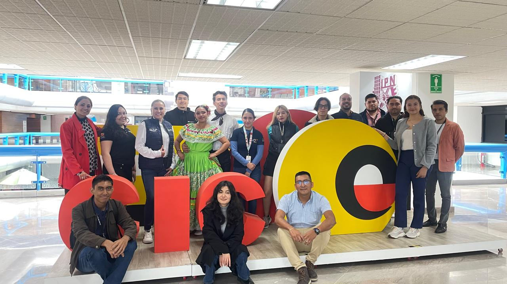
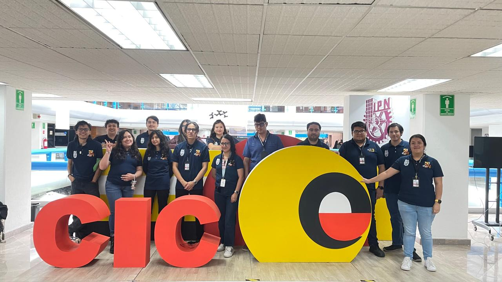

Acerca de CORE 2026
El Congreso CORE 2026 es la continuación de una tradición de 26 años en la que la comunidad del Centro de Investigación en Computación (CIC) participa activamente para promover el intercambio de conocimientos, la divulgación científica y la vinculación entre estudiantes, investigadores, académicos y profesionales del sector tecnológico.
En esta edición, bajo el tema “IA y Supercómputo: el motor del futuro tecnológico”, el congreso explora la estrecha relación entre la inteligencia artificial y el supercómputo, abordando el papel fundamental que desempeñan la computación de alto rendimiento, el procesamiento masivo de datos y las infraestructuras especializadas en el desarrollo de tecnologías inteligentes.
CORE 2026 busca generar un espacio de aprendizaje, análisis y discusión sobre los avances, aplicaciones y desafíos de la inteligencia artificial, así como sobre las capacidades de supercómputo que hacen posible el entrenamiento y la ejecución de modelos cada vez más complejos. A través de conferencias, paneles de discusión, talleres y actividades académicas, los asistentes podrán conocer las tendencias actuales, los retos tecnológicos y las oportunidades de innovación que están definiendo el futuro de la computación.
Asimismo, el congreso servirá como plataforma para difundir proyectos de investigación y desarrollos tecnológicos realizados por la comunidad científica, promoviendo el intercambio de experiencias y la colaboración entre distintos sectores.

¡Síguenos en nuestras redes sociales!
Mantente al día con nuestras últimas noticias y eventos. ¡Síguenos y sé parte de nuestra comunidad!